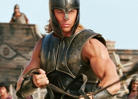

|
Den poté
Výzkumy klimatologa Jacka Halla, naznačují, že by globální oteplování mohlo spustit prudkou a katastrofální změnu zemského klimatu. Všechno začalo, když se Hall stal svědkem odlomení ledové kry o velikosti Rhode Islandu z antarktického ledového pole. Na celé zeměkouli následovaly prudké změny počasí: v Tokiu padaly kroupy o velikosti grapefruitu, rekordy lámající hurikán řádil na Havaji, v Dillí napadl sníh a přes Los Angeles se přehnala ničivá série tornád. Profesor Rapsona potvrdil Jackovy nejhorší obavy: tyto prudké změny počasí jsou příznakem velké globální změny. Množství vody z tajících polárních ledovců narušilo mořské proudy stabilizující náš klimatický systém. Globální oteplování posunulo planetu na pokraj nové doby ledové, která nastane během jedné globální superbouře...
Režie Roland Emmerich Hrají Dennis Quaid, Jake Gyllenhaal, Ian Holm, Emmy Rossum, Sela Ward |

Trója
Roku 1193 před Kristem unesl trójský princ Paris (Orlando Bloom) ženu Spartského krále Menelaa, krásnou Helenu (Diane Kruger). Králův hněv vyústil v desetiletou válku mezi nejsilnějším z řeckých měst a Trójany. Střetli se v ní největší antičtí hrdinové Sparty, v čele s Achilem (Brad Pitt), a Tróji, vedení Hectorem (Eric Bana), nejstarším synem krále Priama. Její vyústění patří k největším příběhům všech dob...
Režie Wolfgang Petersen Hrají Brad Pitt, Orlando Bloom, Sean Bean, Eric Bana, Peter O'Toole, Brian Cox, Diane Kruger |
Harry Potter a vězeň z Azkabanu
Harry, Ron a Hermiona jsou už ve třetím ročníku bradavické Školy čar a kouzel. Harry se nemohl dočkat začátku školního roku, když ale přijede do Bradavic, panuje tam napjatá atmosféra a strach. Proč? Na svobodu uprchl vězeň z Azkabanu, nebezpečný vrah Sirius Black – prý nástupce lorda Voldemorta, Pána zla. A stopa vede - kam jinam, než do školy v Bradavicích. Proto je na obranu povolán strážce Azkabanu, který slyšel Siriuse Blacka mluvit ze spaní. Říkal: "ON je v Bradavicích." Harry je v nebezpečí a neochrání ho ani zdi bradavické školy, ani jeho přátelé. Zrádce se může skrývat přímo ve škole...
Režie Alfonso Cuarón Námět/scénář Steven Kloves (J.K. Rowling) Hrají Daniel Radcliffe, Emma Watson, Rupert Grint, Robbie Coltrane, Gary Oldman, David Thewlis, Maggie Smith, Alan Rickman, Michael Gambon |
|
Vice informací na
www.premierecinemas.cz |
info@premierecinemas.cz
|
fotogalerie
|